Progetti selezionati
2025 – 2026 Tesi magistrale
LIMA
Learning Intelligent Modular Assistant — sistema AI per il supporto educativo a studenti detenuti, sviluppato con il Polo Universitario Penitenziario (PUP) di Palermo. Progettato per rispettare i vincoli tecnologici del contesto penitenziario e adattarsi al profilo di ogni studente, tutor o amministratore.
↗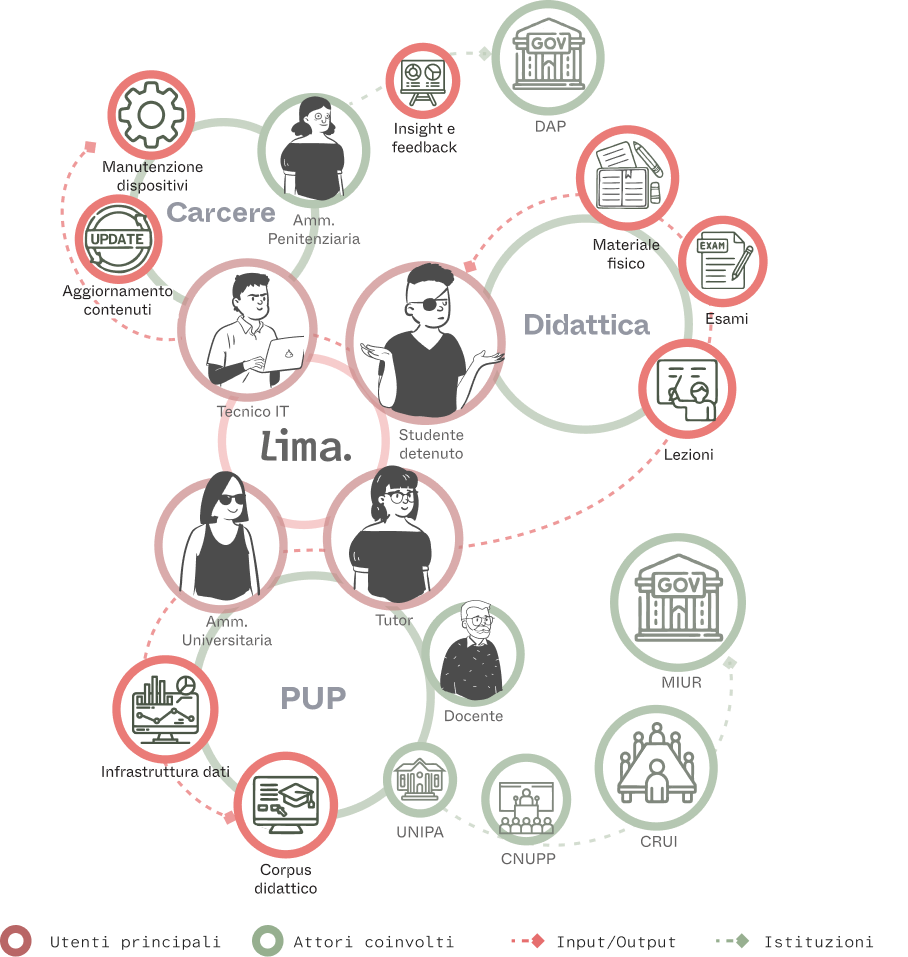
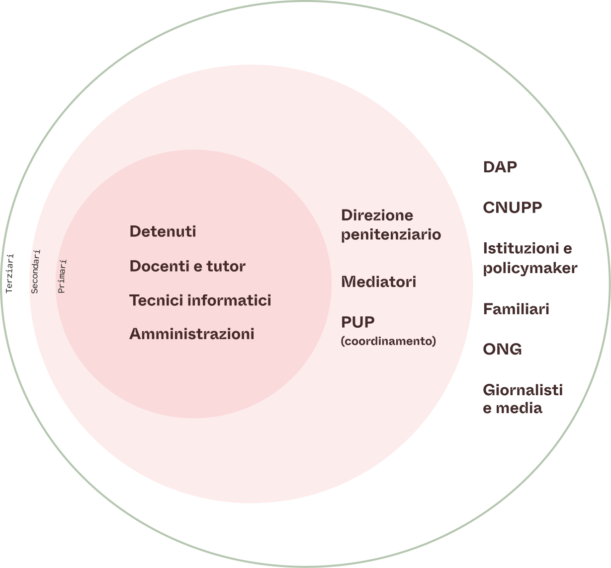

PROBLEMA
Gli studenti detenuti affrontano diverse barriere nell'accesso all'educazione: infrastrutture limitate, assenza di connettività, vincoli di sicurezza e scarsità di risorse. Sono limiti che rendono impossibile garantire il diritto allo studio.
RUOLO E PROCESSO
In questo progetto ho ricoperto il ruolo di UX & Service Designer, guidando il progetto dalla ricerca alla prototipazione. La fase di Discover ha previsto un'indagine socio-strutturale del contesto: ho mappato gli stakeholder, definito le assumption e condotto interviste semi-strutturate. Fin dai primi risultati ho focalizzato l'analisi su tre figure chiave: studente, tutor e amministratore. Dopo aver costruito i service flow e analizzato i vincoli del contesto, ho progettato interfacce conversazionali attraverso wireframe iterativi, testati con utenti proxy e stakeholder del contesto.
CONTESTO E VINCOLI
Il progetto si sviluppa all'interno del Polo Universitario Penitenziario (PUP) di Palermo, un ecosistema multi-attoriale con vincoli precisi. - Tecnologici: infrastrutture assenti o degradate, device obsoleti, nessun accesso a internet, descrivono un contesto offline-first. - Etici: necessità di trasparenza algoritmica, protezione della privacy e controllo esplicito sull'AI ha reso il trust design una priorità progettuale. Non sono stati ostacoli da aggirare, ma leve di design che hanno guidato ogni decisione.
OUTPUT E SOLUZIONE
LIMA è un servizio di tutoraggio didattico basato su IA, progettato per supportare lo studio universitario in carcere in modo continuo, personalizzato e sicuro mediando tra gli attori del contesto. - Studente: supporto adattivo, organizzazione del percorso di studio ed esercitazioni personalizzate con feedback, accessibile 24/7, anche offline. - Docenti e tutor: controllo sui materiali didattici, monitoraggio dei progressi e configurabilità dei limiti dell'IA, mantenendo piena agency educativa. - Amministrazione: gestione degli accessi, report anonimizzati sull'utilizzo condivisibili, e un'architettura completamente air-gapped zero connessione esterna, zero rischio di fuga di dati. Una prerogativa del progetto è stata quella di allinearsi ai vincoli del Design System della PA Italiana, attraverso l'utilizzo dell'asset rilasciato da Designers Italia.
2025
BLITZ!
BLITZ! è un'app mobile per creare e gestire BioBlitz: eventi temporanei in cui professionisti e cittadini collaborano per raccogliere dati sulla biodiversità di un'area. Progettata come strumento di citizen science, combina raccolta dati sul campo, gamification e visualizzazione in tempo reale, in collaborazione con il Consorzio di Bonifica Acque Risorgive e l'Osservatorio Citizen Science.
↗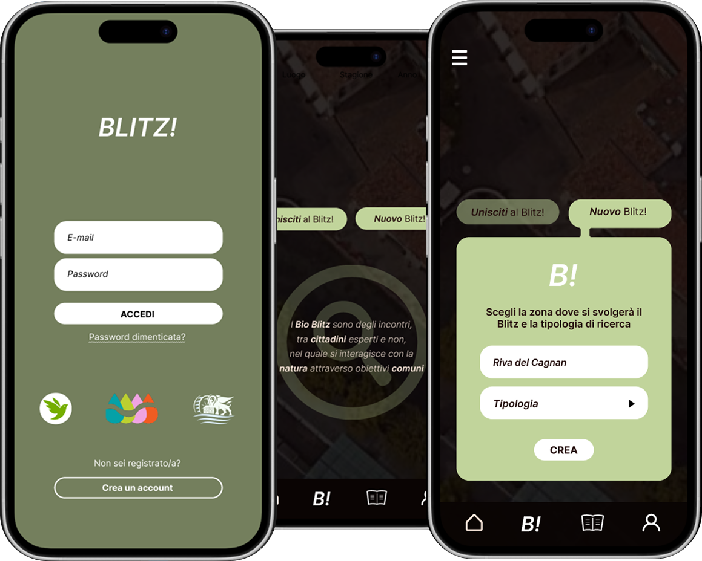
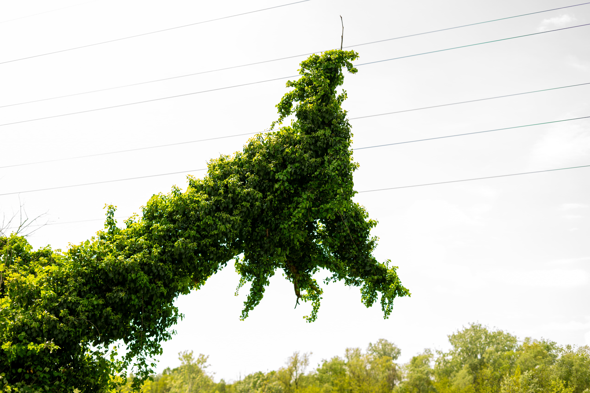
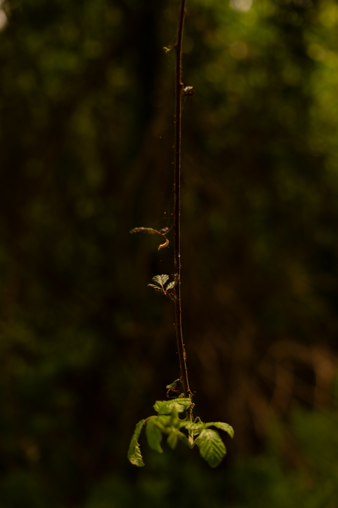
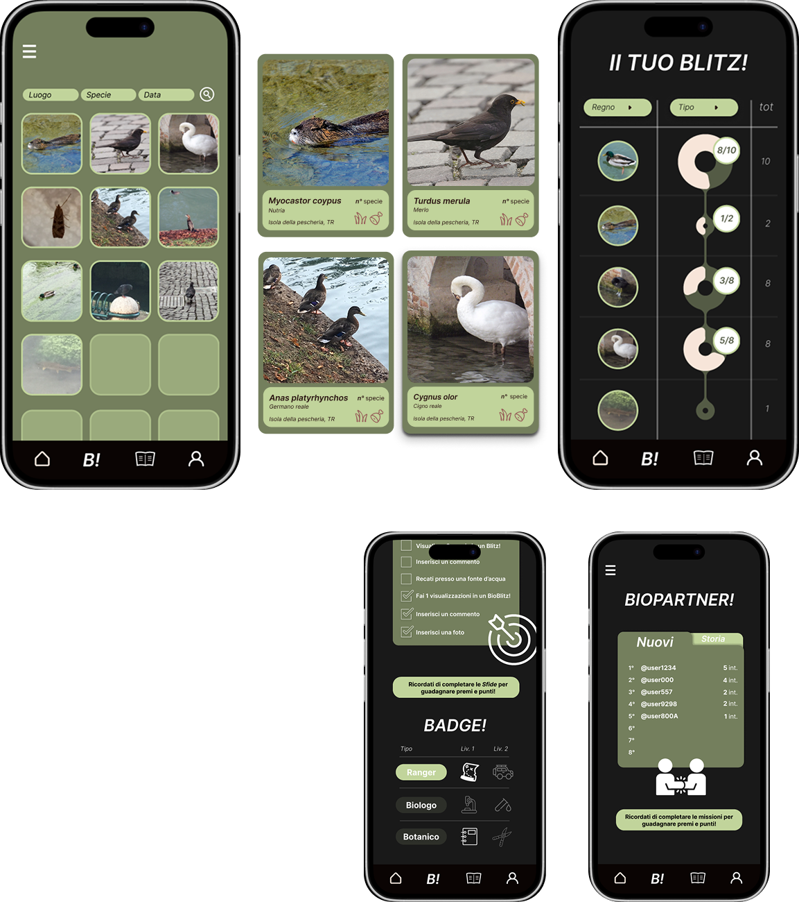
PROBLEMA
La raccolta dati sulla biodiversità dipende quasi interamente da professionisti specializzati, rendendo il monitoraggio ambientale lento, costoso e geograficamente limitato. Manca uno strumento che coinvolga i cittadini in modo strutturato, trasformando osservazioni spontanee in dati scientificamente utili.
RUOLO E PROCESSO
Ho ricoperto il ruolo di UX designer, progettando l'esperienza di gioco dell'app. Il processo ha previsto analisi del contesto e degli utenti target, definizione dei flussi per le tre figure chiave (osservatore, organizzatore, ricercatore) e prototipazione in Figma. L'integrazione con iNaturalist e i requisiti del contesto scientifico hanno guidato ogni decisione di design.
CONTESTO E VINCOLI
Il progetto nasce durante il laboratorio di Data Visualization, in collaborazione con il Consorzio di Bonifica Acque Risorgive (Veneto) e l'Osservatorio Citizen Science. I vincoli principali: raccolta dati in contesti outdoor e offline, utenza eterogenea (esperti e non), necessità di produrre dataset strutturati compatibili con standard scientifici, e integrazione con ecosistemi esistenti come iNaturalist.
OUTPUT E SOLUZIONE
BLITZ! risolve il problema strutturando l'esperienza in tre layer integrati. - Raccolta sul campo: osservazioni geolocalizzate con foto, descrizioni e tassonomia, archiviate per specie e luogo in un diario personale consultabile. - Visualizzazione dati: al termine di ogni Blitz vengono generate dashboard con distribuzione specie, contributi dei partecipanti e grafici riassuntivi in tempo reale. - Gamification: badge personalizzati, livelli di esperienza e statistiche individuali incentivano la partecipazione continuativa e valorizzano il contributo di ogni osservatore.
2022
Erba Tinta
Erba Tinta è un pacchetto educativo per istituti penitenziari minorili, centrato su un'aiuola sensoriale condivisa, dinamiche di gamification e plant therapy. Un progetto di service design per l'innovazione sociale che ripensa la rieducazione attraverso la cura, la comunità e l'interazione con il vivente.
↗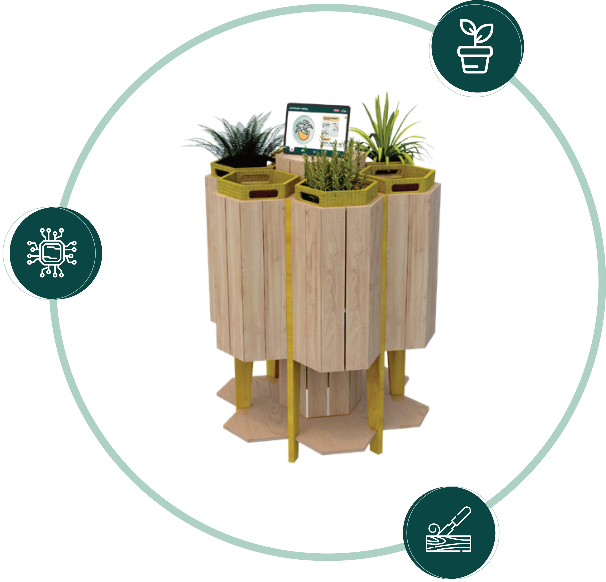
MVP1
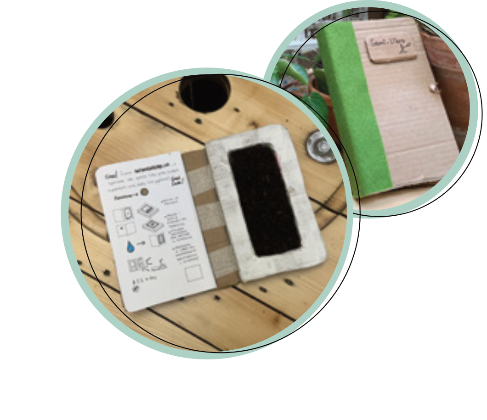
MVP2
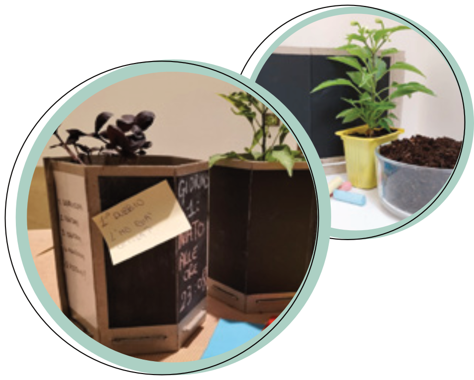
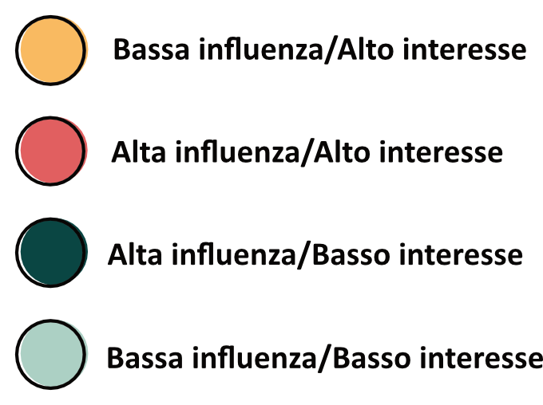
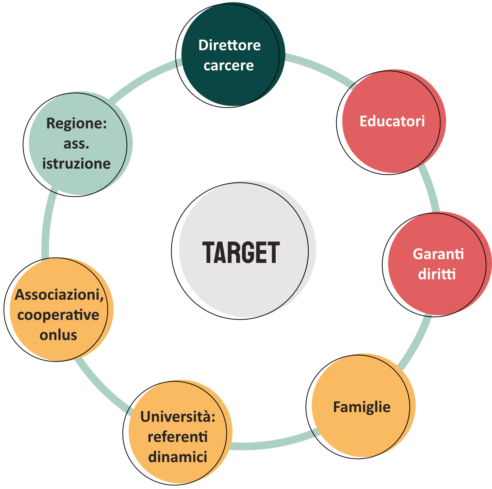
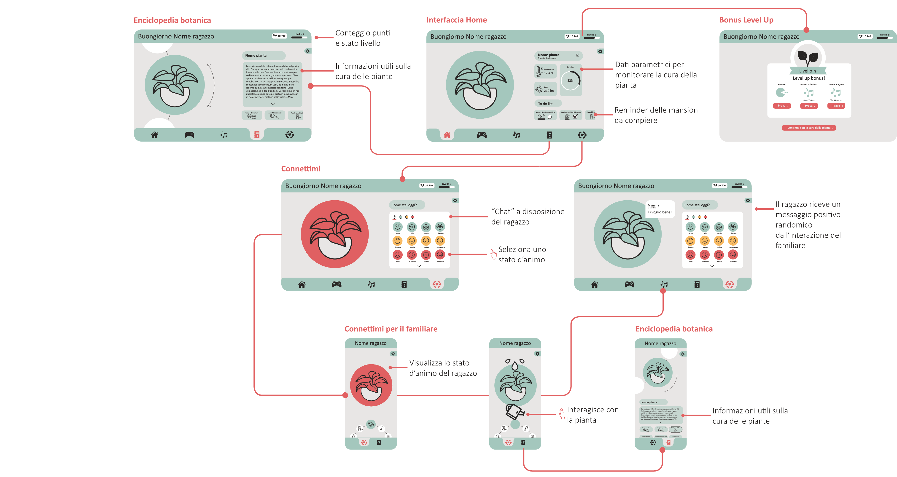
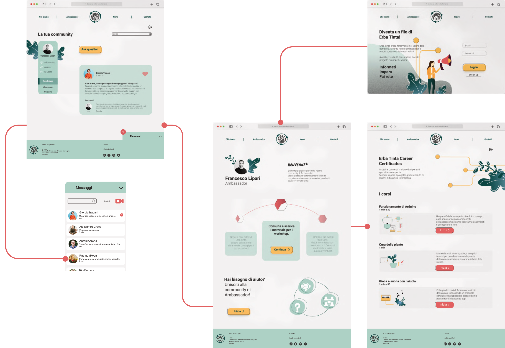
PROBLEMA
I detenuti perdono progressivamente il senso del tempo e la capacità di relazionarsi con l'ambiente. I percorsi rieducativi tradizionali risultano la maggior parte delle volte passivi, individuali e disconnessi dalla quotidianità detentiva. Manca un modello formativo collaborativo, sensoriale e radicato nello spazio abitativo.
RUOLO E PROCESSO
Ho contribuito al progetto all'interno di un team, seguendo il metodo del Double Diamond. Dopo una fase di ricerca qualitativa con professionisti del contesto detentivo, abbiamo ridefinito il target: non solo il detenuto, ma il suo rapporto con lo spazio abitativo. Abbiamo testato due MVP iterativi, prima con utenti proxy, poi in contesto reale al Centro TAU di Palermo, fino alla definizione del pacchetto educativo finale.
CONTESTO E VINCOLI
Il progetto si sviluppa all'interno del Centro Polifunzionale Diurno "Malaspina" di Palermo, con vocazione a estendersi ad altri istituti penitenziari. Il contesto è multi-attoriale: detenuti, tutor, educatori, amministrazione penitenziaria, con dinamiche relazionali e istituzionali complesse. I vincoli progettuali includono: spazi fisici rigidamente controllati, tempistiche discontinue, bassa autonomia dei partecipanti. Ogni decisione progettuale ha dovuto bilanciare rigore educativo, semplicità d'uso e sostenibilità operativa per i tutor.
OUTPUT E SOLUZIONE
Erba Tinta è un pacchetto educativo strutturato in tre livelli interconnessi: prodotto, processo e comunicazione. - Aiuola sensoriale + Arduino: struttura esagonale modulare autocostruita dai ragazzi, con piante collegate ad Arduino che diventano controller per giochi e composizioni musicali. Un tablet ricondizionato integrato visualizza i parametri vitali delle piante e le dinamiche di gamification (livelli, punti, sfide). - App Erba Tinta: interfaccia per monitorare la pianta, accumulare punti, accedere a giochi e all'enciclopedia botanica. La versione ipotizzata include Connettimi, una chat veicolata che permette ai ragazzi di comunicare con i familiari attraverso stati d'animo e interazioni con la pianta. - 3 workshop + laboratori professionalizzanti (Arduino, Falegnameria, Botanica) con rilascio di certificati spendibili nel mondo del lavoro. Supportati da manuale d'istruzioni e vademecum per i tutor. - Strategia di lancio: campagna crowdfunding su EPPELA, con piano editoriale di 30 giorni, sito web con sezione Ambassador ed e-learning, diffusione tramite podcast su LinkedIn e Instagram.
2022
BYE
Be Your Event è una piattaforma web per scoprire, sponsorizzare e vivere eventi locali, progettata per connettere utenti, locali e organizzatori in un ecosistema community-driven.
↗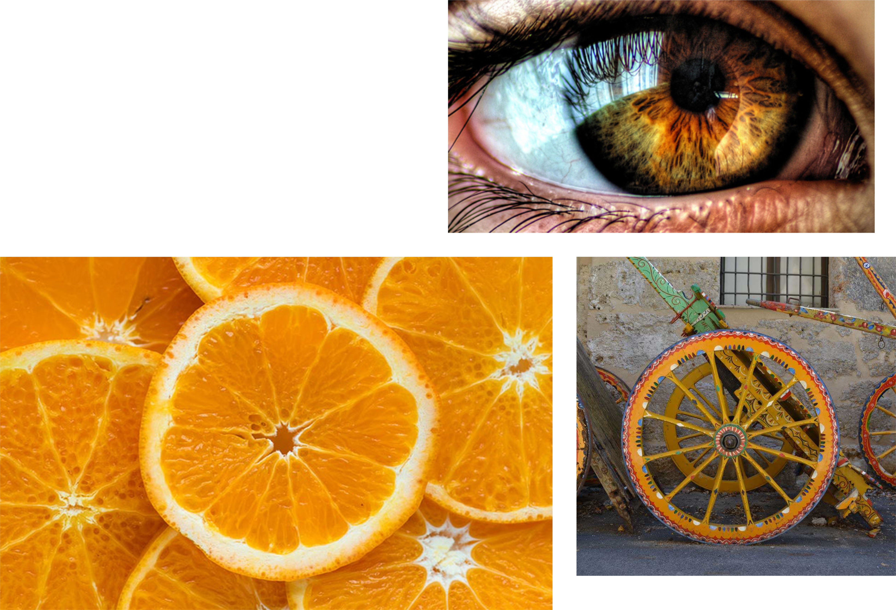
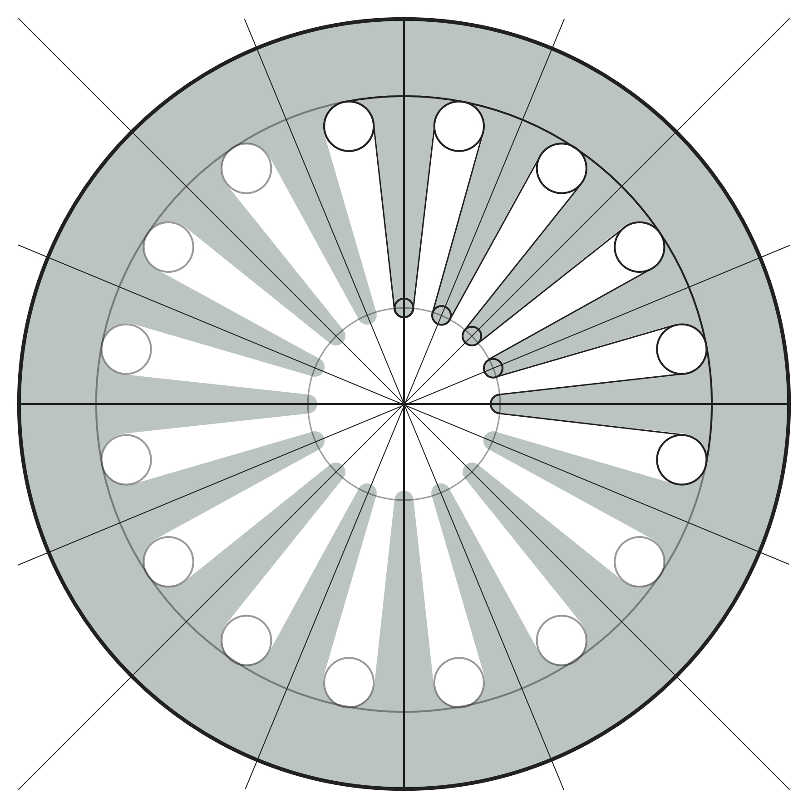
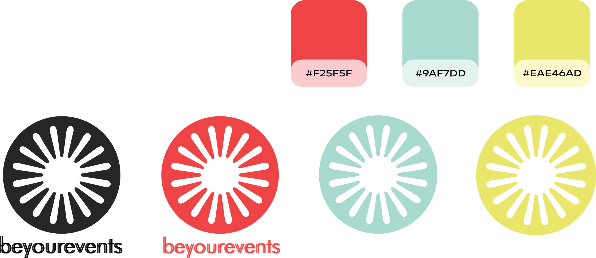
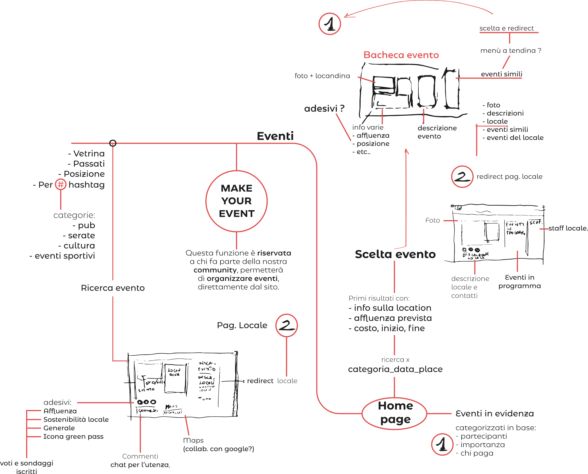
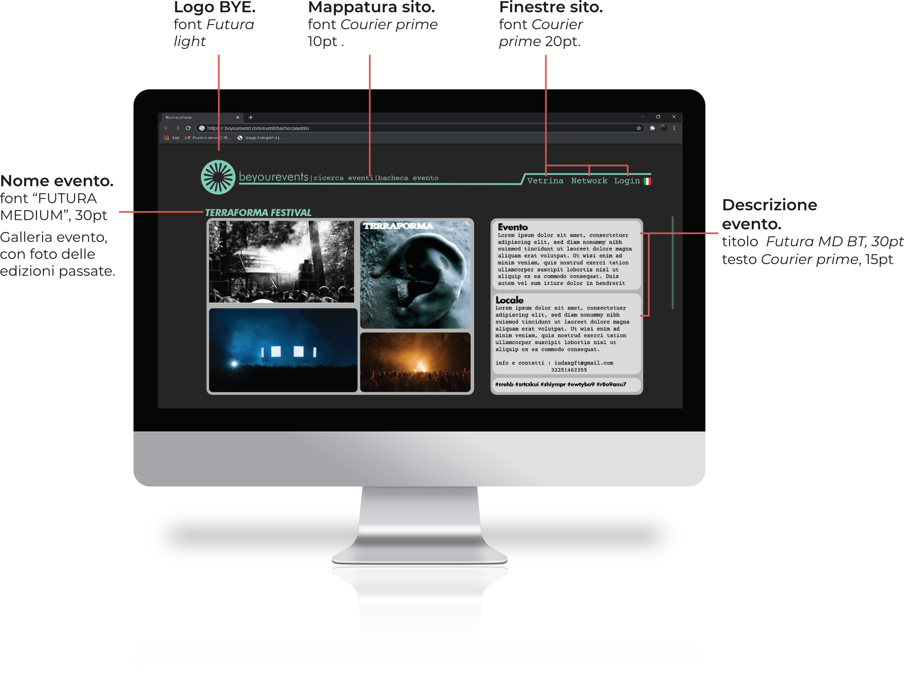
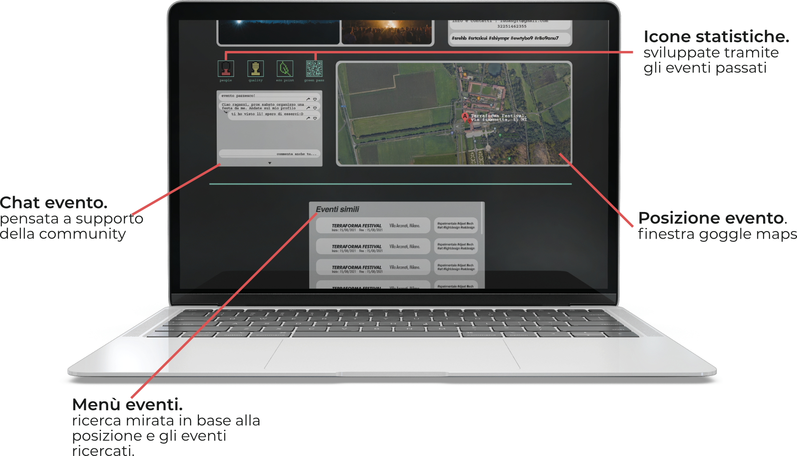
PROBLEMA
Scoprire eventi locali rilevanti è un'esperienza frammentata: le informazioni sono disperse tra social, siti e passaparola, senza un punto di accesso unificato. Chi organizza eventi fatica a raggiungere il pubblico giusto, mentre chi cerca non dispone di strumenti di ricerca contestualizzati per posizione, categoria e preferenze.
RUOLO E PROCESSO
Progetto personale. Il processo ha previsto la definizione del concept di servizio, l'identificazione di due target: utente standard e cliente/sponsor, con la mappatura dei relativi bisogni. Ho progettato la sitemap dell'intera piattaforma, definito lo userflow principale dalla homepage alla bacheca evento, e sviluppato wireframe lo-fi per le schermate chiave: homepage, bacheca evento e pagina locale. In parallelo ho curato la brand identity: logotipo, palette e sistema tipografico, con un'identità visiva ispirata ai simboli della cultura siciliana, reinterpretati in chiave contemporanea.
CONTESTO E VINCOLI
Il progetto nasce come iniziativa personale, il che ha permesso una definizione autonoma dello scopo e delle priorità progettuali. Il principale vincolo è stato bilanciare la complessità del sistema multi-attoriale, con utenti, come locali o sponsor, con bisogni divergenti.
OUTPUT E SOLUZIONE
Be Your Event si articola su due livelli di accesso: utente standard e cliente/sponsor, con un'architettura pensata per connettere chi cerca eventi e chi li organizza. - Ricerca e discovery: per categoria, data, posizione e hashtag, con risultati personalizzati per cronologia e geolocalizzazione. - Bacheca evento e pagina locale: galleria, mappa integrata, chat tra partecipanti, statistiche di affluenza e sostenibilità, profilo venue con eventi in programma e valutazioni della community. - Profilo utente: storico eventi, badge e sfide per incentivare la partecipazione continuativa. Il progetto è attualmente in pausa nella fase di concept. Gli output prodotti includono sitemap, userflow, wireframe lo-fi e brand identity completa.